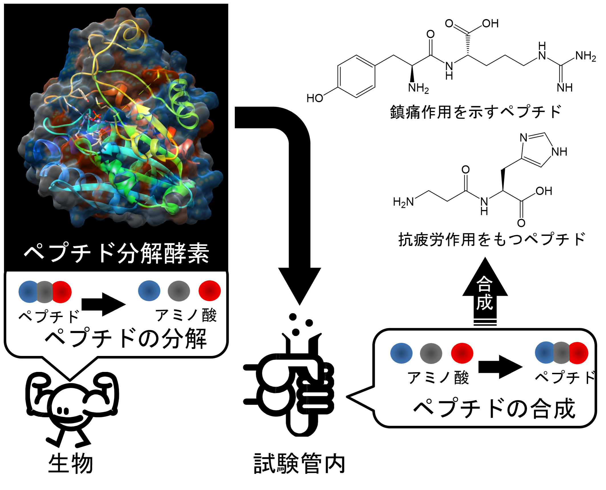
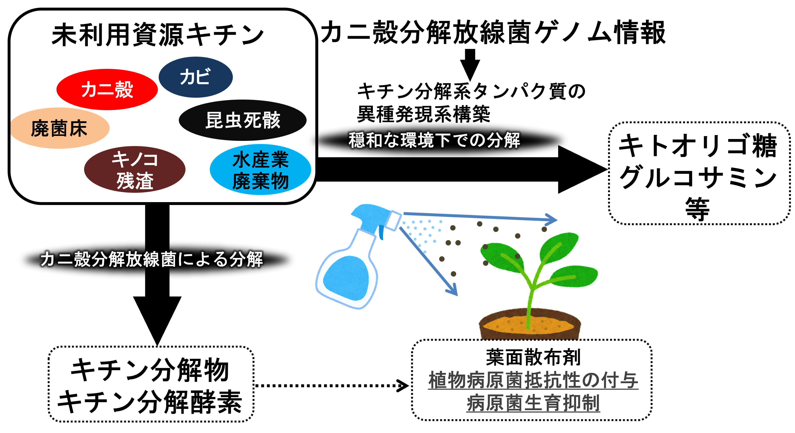
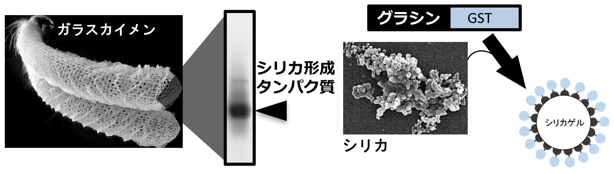

研究の概要
人々の暮らしに役立つ酵素化学
酵素は、全ての生物が生きていくために必要な化学反応を触媒するタンパク質です。その働きは全ての生物の生命維持に必要で、人々は古くから「発酵」という形で知らず知らずのうちに酵素を利用してきました。周囲を広く見渡すと、様々な酵素や微生物が産業や生活に役立っています。私の研究室では、微生物による発酵を通して有用な酵素を見つけ、未利用資源の有効活用やモノづくり等、様々な方面への応用に取り組んでいます。

自然環境や堆肥等をもとに、有用な機能を持つ微生物を単離・獲得します。次に有用な機能を持つ酵素をその微生物から取出し、解析を通して性質を見極めます。このようにして得られた微生物や酵素は、様々な方面への利用に向けて検討が行われます。
研究プロジェクト
セリン加水分解酵素の「副反応」を利用した有用物質合成
セリン加水分解酵素の本来の機能は加水分解の触媒ですが、その誤作動として転移反応を触媒します。転移反応による生成物は多様であるため、この機能を利用して、様々なペプチドや機能物質の合成に挑戦しています。これまでに、放線菌由来の酵素を利用して、食肉から抽出される筋肉成分“イミダゾールジペプチド”や、農薬のリード化合物であるジケトピペラジン類、ジペプチド同士のライゲーションによるテトラペプチドとブロックポリマーの合成を実現しました。また、緑膿菌由来の酵素を利用して、様々なアセチル化物質の合成にもチャレンジしています。
キチン分解放線菌を利用した次世代バイオマス「未利用資源キチン」からの有用物質生産
キチンはセルロースに次いで生産量が多い多糖で、次世代バイオマスとしての利用に期待されています。しかし、その強固な構造から分解が難しく、未だ有効利用に至っていません。これまでに、数種のカニ殻分解放線菌を単離し、そのゲノム構造を決定しました。また、 カニ殻分解放線菌による直接的なカニ殻の分解や複数のキチン分解酵素の生産を実現しました。本研究では、カニ殻分解放線菌が生産するキチン加水分解酵素の廃棄物処理や農業分野への利用、そしてキチンを材料とした機能糖の生産を目指しています。
シリカ形成タンパク質の機能を利用した新たな酵素固定化技術の開発
様々な酵素が産業や生活に役立っていますが、その多くが非常に高価で再利用が望まれています。また、センサーなどでは、酵素反応を特定の場所で行う必要があります。しかし酵素による反応を特定の場所で行い、使用後に回収して再利用するには酵素の固定化が必要です。私たちはこれまでに、ガラスカイメンのシリカ骨格からシリカ形成タンパク質を見出しました。このタンパク質はシリカに強く吸着し、ケイ酸からシリカを形成します。この機能を利用して、これまでにGSTという酵素のシリカへの固定化に成功しました。この固定化技術は今後、リアクターや分析・診断に利用可能なセンサーへの応用に繋げていきます。
